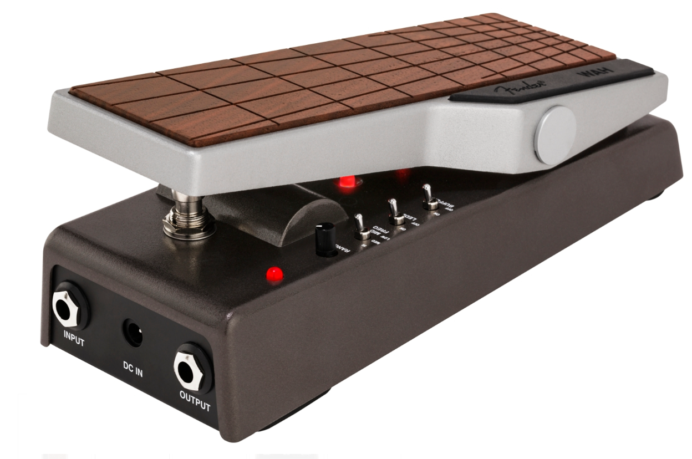
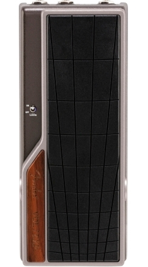

Not able to see your wah pedal in the dark? Don't cry about it. Fender's Tread-Light™ Wah Pedal contains a unique, switchable under treadle LED that allows for ease of visibility on stage under any light. It features adjustable treble and a three-way top mounted mid-frequency toggle for a variety of tonal options. The internal buffer can be switched to a buffered or classic wah effect.
Designed by Fender's in-house team of experts, the Tread-Light™ Wah Pedal is an all-original Fender circuit. The stage-ready chassis and treadle are crafted from lightweight, durable anodized aluminum, with a wooden pad designed for the rigors of live performance. The switchable LED indicates when the pedal is active and ready for use.
A wah-wah pedal, or simply wah pedal, is a type of electric guitar effects pedal that alters the tone and frequencies of the guitar signal to create a distinctive sound, mimicking the human voice saying the onomatopoeic name "wah-wah". The pedal sweeps the peak response of a frequency filter up and down in frequency to create the sound, a spectral glide, also known as "the wah effect". The wah-wah effect originated in the 1920s, with trumpet or trombone players finding they could produce an expressive crying tone by moving a mute in and out of the instrument's bell. This was later simulated with electronic circuitry for the electric guitar when the wah-wah pedal was invented. It is controlled by movement of the player's foot on a rocking pedal connected to a potentiometer. Wah-wah effects may be used as a fixed-filter to alter an instrument’s timbre (known as a “cocked-wah”[1]); they may be used when a guitarist is soloing; or, classically, they may be used to create a "wacka-wacka" funk-styled rhythm for rhythm guitar playing.[
The first wah pedal was created by Bradley J. Plunkett at Warwick Electronics Inc./Thomas Organ Company in November 1966. This pedal is the original prototype made from a transistorized MRB (mid-range boost) potentiometer bread-boarded circuit and the housing of a Vox Continental Organ volume pedal. The concept, however, was not new. Country guitar virtuoso Chet Atkins had used a similar, self-designed device on his late 1950s recordings of "Hot Toddy" and "Slinkey". Jazz guitarist Peter Van Wood had a modified Hammond organ expression pedal; he recorded in 1955 a version of George Gershwin's "Summertime" with a "crying" tone, and other recordings including humorous "novelty" effects. A DeArmond Tone and Volume pedal was used in the early 1960s by Big Jim Sullivan, notably in some Krew Cats instrumental tracks, and in Dave Berry's song "The Crying Game".
The creation of the modern wah pedal was an accident which stemmed from the redesign of the Vox Super Beatle guitar amplifier in 1966. Warwick Electronics Inc. also owned Thomas Organ Company and had earlier entered into an agreement with Jennings Musical Instruments (JMI) of England for Thomas to distribute the Vox name and products in the United States. In addition to distributing the British-made Vox amplifiers, the Thomas Organ Company also designed and manufactured much of the Vox equipment sold in the US. The more highly regarded British Vox amplifiers were designed by Dick Denney and made by JMI, the parent company of Vox. Warwick assigned Thomas Organ Company to create a new product line of solid state Vox amplifiers called Vox Amplifonic Orchestra, which included the Super Beatle amplifier, named to capitalize on the Vox brand name's popularity in association with the Beatles, who used the JMI English Vox amplifiers such as the famous Vox AC30. The US-made Vox product line development was headed by musician and bandleader Bill Page. While creating the Vox Amplifonic Orchestra, the Thomas Organ Company decided to create an American-made equivalent of the British Vox amplifier but with transistorized (solid state) circuits, rather than vacuum tubes, which would be less expensive to manufacture. During the re-design of the USA Vox amplifier, Stan Cuttler, head engineer of Thomas Organ Company, assigned Brad Plunkett, a junior electronics engineer, to replace the expensive Jennings 3-position mid-range boost (MRB) circuit switch with a transistorized solid state MRB circuit.
Plunkett had lifted and bread-boarded a transistorized tone-circuit from the Thomas Organ (an electric solid state transistorized organ) to duplicate the Jennings 3-position circuit. After adjusting and testing the amplifier with an electronic oscillator and oscilloscope, Plunkett connected the output to the speaker and tested the circuit audibly.